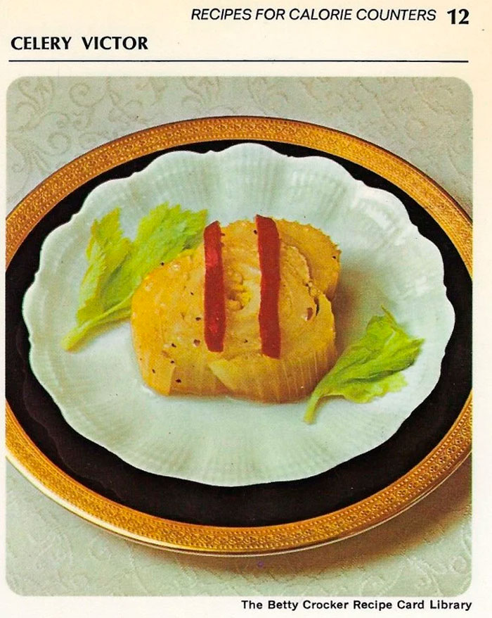

Celery Victor

Ingredients:
- 1 bunch of celery
- 1 cup of water
- 1 beef bouillon cube
- 1/4 cup low calorie Italian salad dressing
- Pimiento strips
Steps:
- Trim root end off celery but do not separate stalks.
- Remove leaves and coarse outer stalks.
- Cut celery bunch crosswise once so bottom section is 5 inches long.
- Cut bottom section crosswise into quarter; tie quarters with string.
- In skillet, heat water to boiling; dissolve bouillon cube in water.
- Add celery bundles.
- Cover; heat to boiling. Cook about 15 minutes.
- Drain celery; place in shallow glass dish.
- Pour salad dressing over celery. Refrigerate 3 hours, turning bundles twice.
- Serve and enjoy!
Back to Recipe List